异兽蠃鱼
| 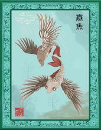 |
蠃[luǒ] 【原文】 邽山，蒙水出焉，南流注于洋水，其中多黄贝①；蠃鱼，鱼身而鸟翼，音如鸳鸯，见则其邑大水。 【注释】 黄贝：据古人说是一种甲虫，肉如蝌蚪，但有头也有尾巴。 【译文】 邽山，蒙水从这座山发源，向南流入洋水，水中有很多黄贝；还有一种蠃鱼，长着鱼的身子却有鸟的翅膀，发出的声音像鸳鸯鸟鸣叫，在哪个地方出现那里就会有水灾。 |
异兽孰湖
| 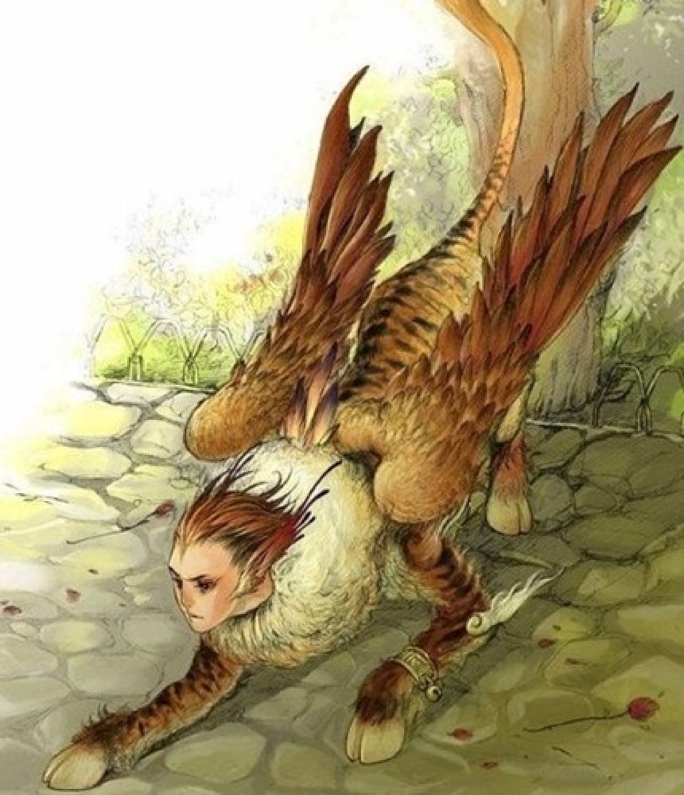 |
【原文】 崦嵫之山①，有兽焉，其状马身而鸟翼，人面蛇尾，嗜好举人，名曰孰湖。 【注释】 ①崦嵫之山：即崦嵫山，神话传说是太阳落入的地方，山下有蒙水，水中有虞渊。 【译文】 崦嵫山，山中有一种野兽，形状是马的身子而鸟的翅膀，有人的面孔而长着蛇的尾巴，很喜欢把人抱着举起，名称是孰湖。 【区别】 形似英招，但英招为马身而人面，虎纹而鸟翼，与孰湖的区别是英招无蛇尾，神位当与陆吾平级，不食人。 |
异兽穷奇
|
【原文】 邽山，其上有兽焉 ，其状如虎，猬毛，名曰穷奇，音如嗥狗，是食人。 【译文】 邽山，山上有一种野兽，形状像一般的虎，但全身长着刺猬毛，名称是穷奇，发出的声音如同狗叫，吃人。 |
异兽驳
| 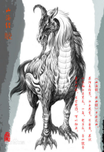 |
【原文】 中曲之山，有兽焉，其状如马而白身黑尾，一角，虎牙爪，音如鼓音，其名曰驳，是食虎豹，可以御兵。 【译文】 中曲山，山中有一种野兽，形状像普通的马却长着白身子和黑尾巴，一只角，老虎的牙齿和爪子，发出的声音如同击鼓的响声，名称是驳，是能吃老虎和豹子的，饲养它可以避战争。 |
冉遗鱼
| 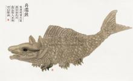 |
【原文】 英鞮之山，涴水出焉，而北流注于陵羊之泽。是多冉遗之鱼，鱼身蛇首六足，其目如马耳，食之使人不眯①，可以御凶。 【注释】 ①眯：梦魇。 【译文】 英鞮山，涴水从这座山发源，然后向北流入陵羊泽。水里有很多冉遗鱼，长着鱼的身子蛇的头和六只脚，眼睛长长的像马耳朵，吃了它的肉就能使人睡觉不做恶梦，也可以辟凶邪之气。 |
异兽鵸鵌
| 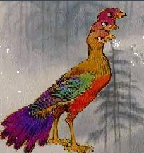 |
（qi tu)
【原文】 翼望之山，有鸟焉，其状如乌，三首六尾而善笑，名曰鵸鵌，服之使人不厌①，又可以御凶。 【注释】 ①厌：通“魇”，梦中遇可怕的事而呻吟、惊叫。 ②鵸：特异、稀罕的鸟。鵌：路边的鸟。通“涂”。“鵸鵌”在先秦时代不是鸟名，它表述的是“鸟的生态特征”， 因之为名。 【译文】 翼望山，山中有一种禽鸟，形状像普通的乌鸦，却长着三个脑袋、六条尾巴并且喜欢像人一样笑，名称是鵸鵌，吃了它的肉就能使人不做恶梦，还可以辟凶邪之气。 |
异兽讙
| 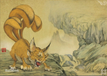 |
【原文】 翼望之山，有兽焉，其状如狸，一目而三尾，名曰讙，其音如夺百声①，是可以御凶，服之已瘅②。 【注释】 ①夺：竞取，争取。这里是超出，压倒的意思。 ②瘅：通“疸”，即黄疸病。中医将此病症分为谷疸、酒疸、黑疸、女劳疸、黄汗五种，认为是由湿热造成的。 3讙： 1.喧哗。通"欢"。喜悦。 【译文】 翼望山，山中有一种野兽，形状像一般的野猫，只长着一只眼睛却是三条尾巴，名称是讙，发出的声音好像能赛过一百种动物的鸣叫，饲养它可以辟凶邪之气，人吃了它的肉就能治好黄疸病。 |
神灵帝江
| 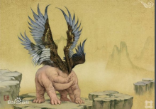 |
【原文】 天山，有神焉，其状如黄囊①，赤如丹火，六足四翼，浑敦②无面目，是识歌舞，实为帝江也③。 【注释】 ①囊：袋子，口袋。 ②浑敦：用“浑沌”，没有具体的形状。 ③帝江：即帝鸿氏，据神话传说也就是黄帝。 【译文】 天山，山里住着一个神，形貌像黄色口袋，发出的精光红如火，长着六只脚和四只翅膀，浑浑 沌沌没有面目，他却知道唱歌跳舞，原本是帝江。 |
异兽天狗
| 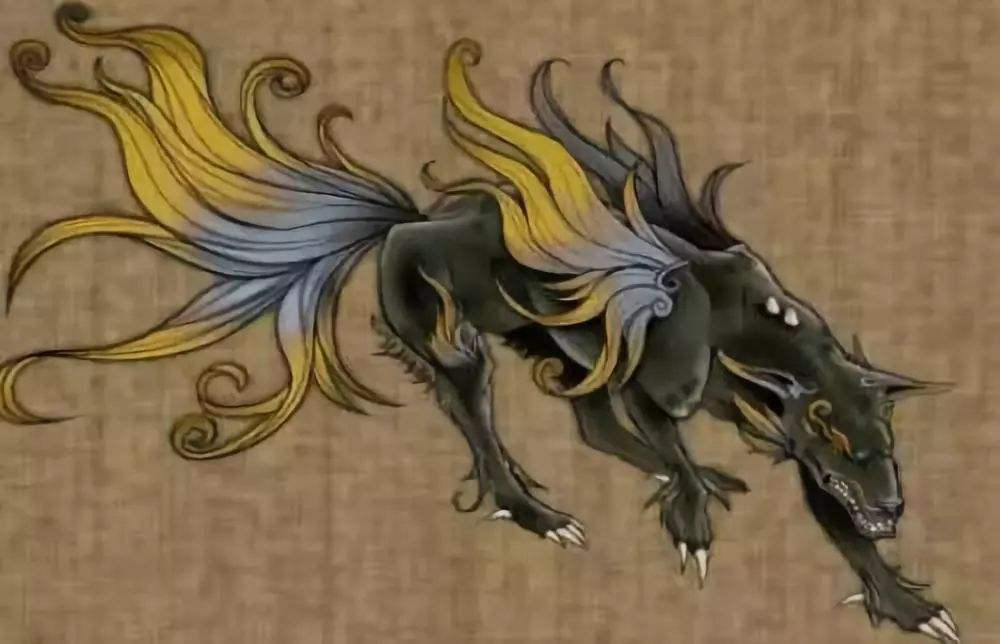 |
【原文】 阴山，有兽焉。其状如狸而白首，名曰天狗，其音如榴榴，可以御凶。 【种类】 1）谛听：为地藏菩萨经案下伏着的通灵神兽。具有保护主人、驱邪避恶、明辨是非之神威；兼备通晓天地、广开财路。谛听原是一条白犬，这是因为地藏法门以孝道为基。狗性忠诚，就如同文殊之雄狮表智慧。 2）祸斗：常指居住在南部的少数民族，所到之处皆发生火灾，所以被看作不祥之兆。祸斗原是一条黑犬，为流星碎片撞击而生。 3）盘瓠：为畲族、瑶族、苗族等先民的图腾崇拜。盘瓠原是一条五色花犬，曾帮助远古高辛平定戎狄之乱。 【译文】 阴山，山中有一种野兽，形状像野猫却是白脑袋，名称是天狗，它发出的叫声与“榴榴”的读音相似，人饲养它可以辟凶邪之气。 |
异兽毕方
| 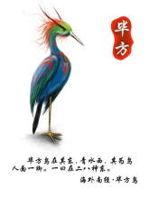 |
【原文】 章莪之山，有鸟焉，其状如鹤，一足，赤文青质而白喙，名曰毕方①，其鸣自叫也，见则其邑有讹火②。 【注释】 ①毕方：传说是树木的精灵，形貌与鸟相似，青色羽毛，只长着一只脚，不吃五谷。又传说是老父神，形状像鸟，一只脚，两只翅膀，常常衔着火到人家里去制造火灾。 ②讹火：怪火，像野火那样莫名其妙地烧起来。 【译文】 章莪山，山中有一种禽鸟，形状像一般的鹤，但只有一只脚，红色的斑纹和青色的身子而有一张白嘴巴，名称是毕方，它鸣叫的声音就是自身名称的读音，在哪个地方出现那里就会发生怪火。 |
异兽狰
| 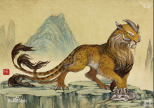 |
【原文】 章莪之山，无草木，多瑶、碧。所为甚怪。有兽焉，其状如赤豹，五尾一角，其音如击石，其名曰狰。 【译文】 章莪山，山上没有花草树木，到处是瑶、碧一类的美玉。山里常常出现十分怪异的物象。山中有一种野兽，形状像赤豹，长着五条尾巴和一只角，发出的声音如同敲击石头的响声，名称是狰。 |
异兽胜遇
| 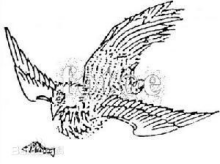 |
【原文】 玉山，有鸟焉，其状如翟而赤，名曰胜遇，是食鱼，其音如鹿，见则其国大水。 【解释】 胜遇1.古代传说中的鸟名。 【译文】 玉山，山中有一种禽鸟，形状像野鸡却通身是红色，名称是胜遇，是吃鱼类的，发出的声音如同鹿在鸣叫，在哪个国家出现就会使那个国家发生水灾。 |
异兽狡
| 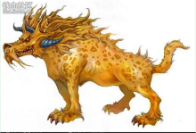 |
【原文】 玉山，有兽焉，其状如犬而豹文，其角如牛，其名曰狡，其音如吠犬，见则其国大穰。 【译文】 玉山，山中有一种野兽，形状像普通的狗却长着豹子的斑纹，头上的角与牛角相似，名称是狡，发出的声音如同狗叫，在哪个国家出现就会使那个国家五谷丰登。 |
西王母
| 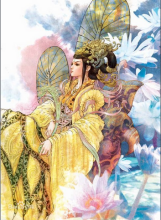 |
【原文】 玉山①，是西王母所居也。西王母其状如人，豹尾虎齿而善啸②，蓬发戴胜③，是司天之厉及五残。 【注释】 ①玉山：据古人讲，这座山遍布着玉石，所以叫做玉山。 ②啸：兽类长声吼叫。 ③胜：指玉胜，古时用玉制做的一种首饰。 【译文】 玉山，这是西王母居住的地方。西王母的形貌与人一样，却长着豹子一样的尾巴和老虎一样的牙齿而且喜好啸叫，蓬松的头发上戴着玉胜，是主管上天灾厉和五刑残杀之气的。 |
异兽鸾鸟
| 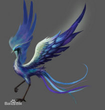 |
【原文】 女床之山，有鸟焉，其状如翟①而五采文，名曰鸾鸟②，见则天下安宁。 【注释】 ①翟：一种有很长尾巴的野鸡，形体也比一般的野鸡要大些。 ②鸾鸟：传说中的一种鸟，属于凤凰一类。 【译文】 女床山，山里有一种禽鸟，形状像野鸡却长着色彩斑斓的羽毛，名称是鸾鸟，一出现天下就会安宁。 |
异兽鹦鹉
|
【原文】 黄山，无草木，多竹箭。有鸟焉，其状如鸮，青羽赤喙，人舌能言，名曰鹦鹉①。 【注释】 ①俗称鹦哥，羽毛色彩美丽，舌头肉质而柔软，经反复训练，能模仿人说话的声音。有许多的种类。 【译文】 黄山，没有花草树木，到处是郁郁葱葱的竹丛。盼水从这座山发源，向西流入赤水，水中有很多玉石。山中有一种禽鸟，形状像一般的猫头鹰，却长着青色的羽毛和红色的嘴，像人一样的舌头能学人说话，名称是鹦鹉。 |
异兽数斯
|
【原文】 皋涂之山，有鸟焉，其状如鸱而人足，名曰数斯，食之已瘿。 【译文】 皋涂山，山中有一种禽鸟，形状像鹞鹰却长着人一样的脚，名称是数斯，吃了它的肉就能治愈人脖子上的赘瘤病与癫痫病等。 |
异兽玃如
|
(jue rú)
【原文】 皋涂之山，有兽焉，其状如鹿而白尾，马脚人手而四角，名曰玃如。 【译文】 皋涂山，山中有一种野兽，形状像普通的鹿却长着白色的尾巴，马一样的脚蹄、人一样的手而又有四只角，名称是玃如。 |
异兽豪彘
| 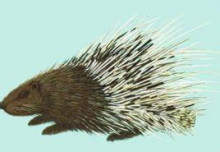 |
豪彘(zhì)，古代称谓，即豪猪，俗称箭猪。 【原文】 竹山，有兽焉，其状如豚而白毛，毛大如笄①而黑端，名曰豪彘②。 【注释】 ①笄：即簪子，是古人用来插住挽起的头发或连住头发上的冠帽的一种长针。 ②豪彘：即豪猪，俗称箭猪。 【译文】 竹山，山中有一种野兽，形状像小猪却长着白色的毛，毛如簪子粗细而尖端呈黑色，名称是豪彘。 |
神灵女娲
|
【原文】 有神十人，名曰女娲之肠，化为神，处栗广之野，横道而处。 【注释】 郭璞注：女娲，古神女而帝者，人面蛇身，一日中七十变。其腹化为此神。 【译文】 有十位神，叫作女娲的肠子，（后来）变成了神，在大片的庄稼地里，睡觉就横卧在路上。 |
异兽鹿蜀
|
【出自】 《山海经》-《南山经》“杻阳之山，有兽焉，其状如马而白首， 其文如虎而赤尾，其音如谣，其名曰鹿蜀，佩之宜子孙” 【原文】 杻阳之山。有兽焉，其状如马而白首，其文如虎而赤尾，其音如谣①，其名曰鹿蜀，佩之宜子孙。 【注释】 ①谣：不用乐器伴奏的歌唱。 【译文】 杻阳山。山中有一种野兽，形状像马却长着白色的头，身上的斑纹像老虎而尾巴却是红色的，吼叫的声音像人唱歌，名称是鹿蜀，人穿戴上它的毛皮就可以多子多孙。 |
异兽狌狌
|
(xīng xīng)
【原文】 南山之首曰鹊山，其首曰招摇之山，临于西海之上。有兽焉，其状如禺①而白耳， 伏行人走，其名曰狌狌②，食之善走。 【注释】 ①禺：传说中的一种野兽，像猕猴而大一些，红眼睛，长尾巴。 ②狌狌：传说一种长着人脸的野兽，也有说它就是猩猩的，而且它能知道往事，却不能知道未来。 【译文】 南方首列山系叫做鹊山山系。鹊山山系的头一座山是招摇山，屹立在西海岸边。山中有一种野兽，形状像猕猴但长着一双白色的耳朵，既能匍伏爬行，又能像人一样直立行走，名称是狌狌，吃了它的肉可以使人走得飞快。 【解释】 《山海经·南山经》：“有兽焉，其状如禺而白耳，伏行人走，其名曰狌狌，食之善走。” 《山海经·海内南经》：狌狌知人名，其为兽如豕而人面。 |
异兽肥遗
|
【原文】 英山，有鸟焉，其状如鹑①，黄身而赤喙，其名曰肥遗，食之已疠②，可以杀虫。 【注释】 ①鹑：即“鹌鹑”的简称，是一种鸟，体形像小鸡，头小尾短，羽毛赤褐色，有黄白色条纹。雄性的鹌鹑好斗 ②疠：癞病，即麻风。 【译文】 英山，山中有一种禽鸟，形状像一般的鹌鹑鸟，是黄身子而红嘴巴，名称是肥遗，人吃了它的肉就能治愈麻疯病，还能杀死体内寄生虫。 |
异兽肥遗2
|
【原文】 太华之山①，削成而四方，其高五千仞②，其广十里，鸟兽莫居。 有蛇焉，名曰肥（虫遗），六足四翼，见则天下大旱。 【注释】 ①太华之山：就是现在陕西省境内的西岳华山。 ②仞：古时八尺为一仞。 【译文】 太华山，山崖陡峭像刀削而呈现四方形，高五千仞，宽十里，禽鸟野兽无法栖身。山中有一种蛇，名称是肥遗，长着六只脚和四只翅膀，一出现就会天下大旱。 |
异兽羬羊
| 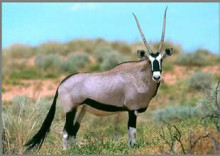 |
(xián) 【原文】 钱来之山，其上多松，其下多洗石①。有兽焉，其状如羊而马尾， 名曰羬羊，其脂可以已腊②。 【注释】 ①洗石：古人说是一种在洗澡时用来擦去身上污垢的瓦石。 ②腊：皮肤皴皱。 3音，大羊之意。《尔雅》云：“羊六尺为羬”。据中国古代动物学史》注其为捻角山羊。 【译文】 钱来山，山上有许多松树，山下有很多洗石。山中有一种野兽，形状像普通的羊却长着马的尾巴，名称是羬羊，羬羊的油脂可以护理治疗干裂的皮肤。 |
异兽颙
|
( yóng)颙，传说中的一种鸟，形状像猫头鹰，长着一副人脸和四只眼睛而且有耳朵，
它发出的叫声就是自身名称的读音，一出现而天下就会大旱。 【原文】 令丘之山，无草木，多火。其南有谷焉，曰中谷，条风自是出①。有鸟焉，其状如枭②，人面四目而有耳，其名曰颙，其鸣自号也，见则天下大旱。 【注释】 ①条风：也叫调风、融风，即春天的东北风。 ②枭：通“鸮”，俗称猫头鹰，嘴和爪弯曲呈钩状，锐利，两眼长在头部的正前方，眼的四周羽毛呈放射状，周身羽毛大多为褐色，散缀细斑，稠密而松软，飞行时无声，在夜间活动。 【译文】 令丘山，没有花草树木，到处是野火。山的南边有一峡谷，叫做中谷，东北风就是从这里吹出来的。山中有一种禽鸟，形状像猫头鹰，却长着一副人脸和四只眼睛而且有耳朵，名称是颙，它发出的叫声就是自身名称的读音，一出现而天下就会大旱。 |
异兽凤凰
|
【寓意】 吉祥 【原文】 南山经卷一 丹穴之山，有鸟焉，其状如鸡，五采而文，名曰凤皇①，首文曰德， 翼文曰义，背文曰礼，膺②文曰仁，腹文曰信。是鸟也，饮食自然，自歌自舞，见则天下安宁。 【注释】 ①凤皇：同“凤凰”，是古代传说中的鸟王。雄为“凤”，雌为“凰”。据古人说，它的形状是鸡的头，蛇的脖颈，燕子的下颔，乌龟的背，鱼的尾巴，五彩颜色，高六尺左右。 ②膺（ying）：胸。 【译文】 丹穴山，山中有一种鸟，形状像普通的鸡，全身上下是五彩羽毛，名称是凤凰，头上的花纹是“德”字的形状，翅膀上的花纹是“义”字的形状，背部的花纹是 “礼”字的形状，胸部的花纹是“仁”字的形状，腹部的花纹是“信”字的形状。这种叫做凤凰的鸟，吃喝很自然从容，常常是自个儿边唱边舞，一出现天下就会太平。 |
异兽虎蛟
|
【原文】 祷过之山，泿水出焉，而南流注于海。其中有虎蛟①，其状鱼身而蛇尾， 其音首如鸳鸯，食者不肿，可以已②痔。 【注释】 ①虎蛟：传说中龙的一个种类。 ②已：停止。这里是止住、制止的意思。 【译文】 祷过山，泿水从这座山发源，然后向南流入大海。水中有一种虎蛟，形状像普通鱼的身子却拖着一条蛇的尾巴，脑袋如同鸳鸯鸟的头，吃了它的肉就能使人不生痈肿疾病，还可以医痔疮。 |
异兽瞿如
| 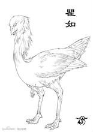 |
qú rú 【原文】 祷过之山，有鸟焉，其状如䴔①而白首，三足，人面，其名曰瞿如，其鸣自号也。 【注释】 ①䴔：传说中的一种鸟，样子像野鸭子而小一些，脚长在接近尾巴的部位。 【译文】 祷过山，山中有一种禽鸟，形状像䴔却是白色的脑袋，长着三只脚，人一样的脸，名称是瞿如，它的鸣叫声就是自身名称的读音。 |
异兽蛊雕
| 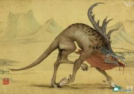 |
【原文】 鹿吴之山，上无草木，多金石。泽更之水出焉，而南流注于滂水。水有兽焉，名曰蛊雕， 其状如雕而有角，其音如婴儿之音，是食人。 【译文】 再往东五百里，是座鹿吴山，山上没有花草树木，但有丰富的金属矿物和玉石。泽更水从这座山发源，然后向南流入滂水。水中有一种野兽，名称是蛊雕，形状像普通的雕鹰却头上长角，发出的声音如同婴儿啼哭，是能吃人的。 |
异兽彘
| 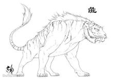 |
zhì 【原文】 浮玉之山，有兽焉，其状如虎而牛尾，其音如吠犬，其名曰彘，是食人。 【译文】 浮玉山，山中有一种野兽，形状像老虎却长着牛的尾巴，发出的叫声如同狗叫，名称是彘，是能吃人的。 |
异兽猾褢
| 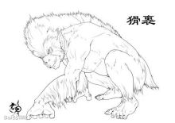 |
huá huái 【原文】 尧光之山，有兽焉，其状如人而彘鬣①，穴居而冬蛰，其名曰猾褢，其音如斫木，见则县有大繇②。 【注释】 ①鬣：牲畜身上刚硬的毛。 ②繇：通“徭”。 【译文】 尧光山，山中有一种野兽，形状像人却长有猪那样的鬣毛，冬季蛰伏在洞穴中，名称是猾褢，叫声如同砍木头时发出的响声，哪个地方出现猾褢那里就会有繁重的徭役。 |
异兽长右
| 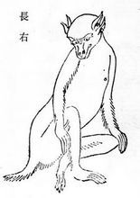 |
长右：或引做“长舌” ，与狌狌、举父均属于猿猴类。长右山出此首，所以以山命名。 【原文】 长右之山，无草木，多水。有兽焉，其状如禺而四耳，其名长右，其音如吟，见则郡县大水。 【译文】 长右山，没有花草树木，但有很多水。山中有一种野兽，形状像猿猴却长着四只耳朵，名称是长右，叫的声音如同人在呻吟，任何郡县一出现长右就会发生大水灾。 |
异兽狸力
| 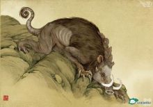 |
柜山，有兽焉，其状如豚，有距①，其音如狗吠，其名曰狸力，见则其县多土功②。 【注释】 ①距：雄鸡、野鸡等跖后面突出像脚趾的部分。这里指鸡的足爪。 ②见：同“现”。县：这里泛指有人聚居的地方。 【译文】 柜山，山中有一种野兽，形状像普通的小猪，长着一双鸡爪，叫的声音如同狗叫，名称是狸力，哪个地方出现狸力而那里就一定会有繁多的水土工程。见到它的地方，地面多起伏，所以猜测狸力善于挖土。 |
异兽赤鱬
| 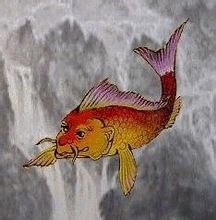 |
(rú)在日本海曾发现类似赤鱬的海鱼标本 【原文】 青丘之山，英水出焉，南流注于即翼之泽。其中多赤鱬①，其状如鱼而人面，其音如鸳鸯②， 食之不疥。 【注释】 ①赤鱬：也叫鲵鱼，即所说的娃娃鱼，有四只脚，长尾巴，能上树，属两栖类动物。 ②鸳鸯：一种雌雄同居同飞而不分离的鸟，羽毛色彩绚丽。 【译文】 青丘山， 英水从这座山发源，然后向南流入即翼泽。泽中有很多赤鱬，形状像普通的鱼却有一副人的面孔，发出的声音如同鸳鸯鸟在叫，吃了它的肉就能使人不生疥疮。 |
异兽灌灌
| 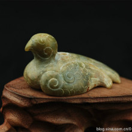 |
(huò huò)
【原文】 青丘之山，有鸟焉，其状如鸠①，其音若呵②，名曰灌灌③，佩之不惑④。食之不疥。 【注释】 ①鸠：即斑鸠，一种体型似鸽子的鸟。 ②呵：大声喝叱。 ③灌灌：传说中的一种鸟，它的肉很好吃，烤熟后更是味道鲜美。 ④佩：这里是插上的意思。 【译文】 青丘山，有一种禽鸟，形状像斑鸠，鸣叫的声音如同人在互相斥骂，名称是灌灌，把它的羽 毛插在身上使人不迷惑。 【出处】 《诗·大雅·板》：“老夫灌灌，小子蹻蹻。” 毛 传：“灌灌，犹欵欵也。” 清 顾炎武 《与潘次耕书》：“若夫不入权门，不居闲公事，是又不待老夫之灌灌也。” 《山海经·南山经》：“﹝ 青丘之山 ﹞有鸟焉，其状如鸠，其音若呵，名曰灌灌，佩之不惑。” 《汉书·地理志下》：“ 溱 与 洧 方灌灌兮，士与女方秉菅兮。” 颜师古 注：“灌灌，水流盛也。”按，今本《诗·郑风·溱洧》作“涣涣”。《晋书·五行志中》：“龙从南来登城看，水从西来河灌灌。” 明 何景明《雨颂》：“灌灌黄流，周原广隰。” |
异兽九尾狐
|
善变化，蛊惑。常用其婴儿哭泣声引人来探也。 【原文】 青丘之山，有兽焉，其状如狐而九尾，其音如婴儿，能食(通“饲”)人；食者不蛊。 【译文】 青丘山，山中有一种野兽，形状像狐狸却长着九条尾巴，吼叫的声音与婴儿啼哭相似，能被人吃，吃了它的肉就能使人不中妖邪毒气。 |
异兽猼訑
|
(bó dàn) 【原文】 基山，有兽焉，其状如羊，九尾四耳，其目在背，其名曰猼訑，佩之不畏。 【译文】 基山，山南阳面盛产玉石，山北阴面有很多奇怪的树木。山中有一种野兽，形状像羊，长着九条尾巴和四只耳朵，眼睛也长在背上，名称是猼訑，人穿戴上它的毛皮就会不产生恐惧心。 |
异兽类
| 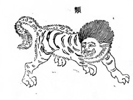 |
【原文】 亶爰之山，多水，无草木，不可以上。有兽焉，其状如狸而有髦①，其名曰类，自为牝牡②，食者不妒。 【注释】 ①髦：下垂至眉的长发。 ②牝：鸟兽的雌性。这里指雌性器官。牡：鸟兽的雄性。这里指雄性器官。 【译文】 亶爰山，山间多水流，没有花草树木，不能攀登上去。山中有一种野兽，形状像野猫却长着像人一样的长头发，名称是类，一身具有雄雌两种性器官，吃了它的肉就会使人不产生妒忌心。 |
异兽鯥
| 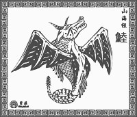 |
(lù) 【原文】 柢山，多水，无草木。有鱼焉，其状如牛，陵居，蛇尾有翼，其羽在魼①下，其音如留牛②，其名曰鯥，冬 死而夏生③，食之无肿④疾。 【注释】 ①魼：即“胠”的同声假借字，指腋下胁上部分。 ②留牛：可能就是本书另一处所讲的犁牛。据古人讲，犁牛身上的纹理像老虎的斑纹。 ③冬死：指冬眠，也叫冬蛰。一些动物在过冬时处在昏睡不动的状态中，好像死了一般。 ④肿：一种皮肤和皮下组织的化脓性炎症。 【译文】 座柢山，山间多水流，没有花草树木。有一种鱼，形状像牛，栖息在山坡上，长着蛇一样的尾巴并且有翅膀，而翅膀长在胁骨上，鸣叫的声音像犁牛，名称是鯥，冬天蛰伏而夏天复苏，吃了它的肉就能使人不患痈肿疾病 |
异兽旋龟
| 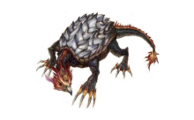 |
《山海经·南山经》中的一种生物，产于怪水。其体貌与普通的乌龟类似，但颜色为红黑，长着鸟的头、毒蛇
的尾巴。据说它的叫声像剖开的木头的声音，将其佩带在身上，耳不聋，还可以治疗足底的老茧。 【原文】 杻阳之山。怪水出焉，而东流注于宪翼之水。其中多玄龟，其状如龟而鸟首虺尾①，其名曰旋龟，其音如判木，佩之不聋，可以为②底。 【注释】 ①虺：毒蛇。 ②为：治理。这里是医治、治疗的意思。底：这里与“胝”的意思相同，就是手掌或脚底因长期摩擦而生的厚皮，俗称“老茧”。 【译文】 杻阳山。怪水从这座山发源，然后向东流入宪翼水。水中有众多暗红色的龟，形状像普通乌龟却长着鸟一样的头和蛇一样的尾巴，名称是旋龟，叫声像劈开木头时发出的响声，佩带上它就能使人的耳朵不聋，还可以治愈脚底老茧。 |
神灵夸父
| 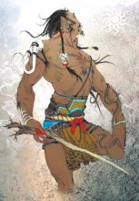 |
【原文】 大荒之中，有山名曰成都载天。有人珥两黄蛇，把两黄蛇，名曰夸父。后土生信，信生夸父。夸父不量力， 欲追日景①，逮②之于禺谷。将饮河而不足也，将走大泽，未至，死于此。 【注释】 ①景：“影”的本字。 ②逮：到，及。 【译文】 大荒当中，有座山名叫成都载天山。有一个人的耳上穿挂着两条黄色蛇，手上握着两条黄色蛇，名叫夸父。后土生了信，信生了夸父。而夸父不衡量自己的体力，想要追赶太阳的光影，直追到禺谷。夸父想喝了黄河水解渴，却不够喝，准备跑到北方去喝大泽的水，还未到，便渴死在这里了。 |
异兽巴蛇
| 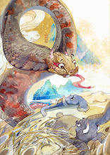 |
【原文】 巴蛇食象，三岁而出其骨，君子服之，无心腹之疾。其为蛇青赤黑。一曰黑蛇青首，在犀牛西。 【译文】 巴蛇能吞下大象，吞吃后三年才吐出大象的骨头，有才能德品的人吃了巴蛇的肉，就不患心痛或肚子痛之类的病。这种巴蛇的颜色是青色、黄色、红色、黑色混合间杂的。另一种说法认为巴蛇是黑色身子青色脑袋，在犀牛所在地的西面。 【战神刑天】刑天与帝至此争神，帝断其首，葬之于常羊之山，乃以乳为目，以脐为口，操干戚而舞。 【译文】 刑天与黄帝到这个地方争取神位，黄帝斩断首级，葬于常羊的大山，就以双乳为眼，肚脐为口，使用盾牌和斧子 |
出处
|
《山海经》全书 18 篇，约 31000 字。 共藏山经5篇、海外经4篇、海内经5篇、大荒经4篇。 《汉书·艺文志》作 13 篇，未把大荒经和海内经计算在内。 全书内容，以五藏山经5篇和海外经4篇做为一组；海内经4 篇作为一组；而大荒经5篇以及书末海内经1篇又作为一组。 每组的组织结构，自具首尾，前后贯串，有纲有目。五藏山经的一组，依南、西、北、东、中的方位次序分篇，每篇又分若干节，前一节和后一节又用有关联的语句相承接，使篇节间的关系表现的非常清楚。 该书按照地区不按时间把这些事物一一记录。所记事物大部分由南开始，然后向西，在向北，最后到达大陆（九州）中部。九州四围被东海、西海、南海、北海所包围。 古代中国也一直把《山海经》作历史看待，是中国各代史家的必备参考书，由于该书成书年代久远，连司马迁写《史记》时也认为：“至《禹本纪》，《山海经》所有怪物，余不敢言之也。”对古代历史、地理、文化、中外交通、民俗、神话等研究，均有价值参考。 《山海经》的地域范围：《南山经》东起浙江舟山群岛，西抵湖南西部，南抵广东南海，包括今浙、赣、闽、粤、湘5省。 《西山经》东起山、陕间黄河，南起陕、甘秦岭山脉，北抵宁夏盐池西北，西北达新疆阿尔金山，《北山经》西起今内蒙、宁夏腾格里沙漠贺兰山，东抵河北太行山东麓，北至内蒙阴山以北。《东山经》包括今山东及苏皖北境。《中山经》西达四川盆地西北边缘。 也有一说山海经中所述之处很多不在今天的中国境内。 |